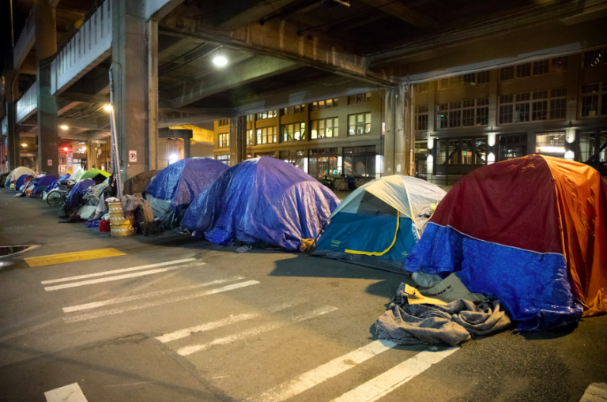

Homelessness & Crime in Seattle
Bjorn Soriano | GEOG 495
Homelessness and crime in Seattle, Washington has damaged the cities reputation over the years. My project aims to perform spatial analysis on these issues and visualize the growth of the issues over the years. By showcasing high-risk areas in Seattle over time, suggestions for smarter city planning and resource allocation can be made to combat these issues.